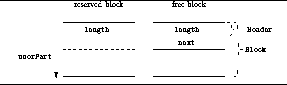

Data Structures and Algorithms
with Object-Oriented Design Patterns in C++
Data Structures and Algorithms
with Object-Oriented Design Patterns in C++The objective in the implementation of a storage pool is to make the running times for Acquire and Release operations as small as possible. Ideally, both operations run in constant time. In this section, we present a storage pool implementation that uses a singly-linked list to keep track of the unused areas of memory. The consequence of using a this approach is that the running times are not ideal.
There are several requirements that the implementation of a storage pool must satisfy: It must keep track somehow of the blocks of memory that have been allocated as well as the areas of memory that remain unallocated.
For example, in order to implement the Acquire operation, we must have the means to locate an unused area of memory of sufficient size in order to satisfy the request. The approach taken in this section is to use a singly-linked list to keep track of the free areas in the pool.
In addition to keeping track of the free areas, it is necessary to keep track of the size of each block that is allocated. This is necessary because the Release operation takes only a pointer to the block of memory to be released. I.e., the size of the block is not provided as an argument to the Release function.
Where should we keep track of this extra information? It turns out that the usual approach is to keep the necessary information in the storage pool itself. An area that has not been allocated to a user is available for use by the pool itself. Specifically, the nodes of the linked list of free areas themselves occupy the free areas.
We implement the storage pool as an array of Blocks.
The structure of a Block is shown in Figure  .
A sequence of consecutive,
contiguous blocks in the array constitutes an area.
Only the first block in each area is used to keep track of the entire area.
.
A sequence of consecutive,
contiguous blocks in the array constitutes an area.
Only the first block in each area is used to keep track of the entire area.

Figure: SinglyLinkedPool::Block Structure Layout
An area which has been allocated is said to be reserved . The first word of the first block in the area is used to keep track of the length of the area (in blocks). The remaining memory locations in the area are given up to the user.
An area which has not been allocated is said to be free . The first word of the first block in the area is used to keep track of the length of the area (in blocks). All of the free areas are linked together in a singly-linked list, known as the free list . The second word of the first block in the area contains a pointer to the next free area in the free list. For reasons explained below, we keep the free list sorted by the address of areas contained therein.
 Copyright © 1997 by Bruno R. Preiss, P.Eng. All rights reserved.
Copyright © 1997 by Bruno R. Preiss, P.Eng. All rights reserved.